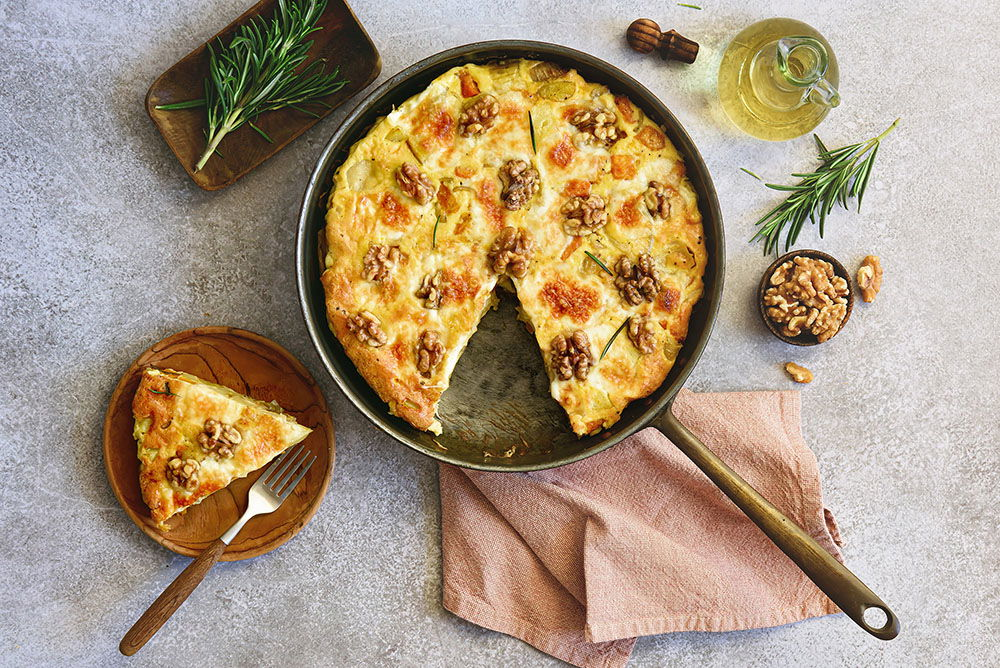

Avond Eten

Ingredienten
- 400 gr vastkokende aardappelen
- 600 gr flespompoen
- 4 grote uien
- 2 teentjes knoflook
- 2 takjes rozemarijn
- 2 el olijfolie
- Peper en zout
- 6 eieren
- 50 ml kookroom light
- 100 gr taleggio
- 30 gr ongezouten walnoten
Bereiding
- Verwarm de oven voor op 200°C. Schil de aardappelen en pompoen en snijd beide in kleine blokjes. Pel de uien, snijd in vieren en vervolgens in ringen. Pel de knoflook en hak grof. Ris de takjes rozemarijn.
- Meng de blokjes aardappel en de pompoen, ui, knoflook en rozemarijn met de olijfolie en breng op smaak met peper en zout. Verdeel over een bakplaat met bakpapier. Rooster het geheel 20 min. in de oven.
- Klop intussen de eieren los met de kookroom. Snijd de Taleggio in plakken. Verdeel de geroosterde groenten in een koekenpan of ovenschaal. Let op: de koekenpan moet wel hittebestendig zijn, dus geen plastic handvat.
- Verdeel het eimengsel over de groenten. Verdeel de plakjes Taleggio en walnoten over de groenten. Bak het geheel nog eens 20 min. in de oven.